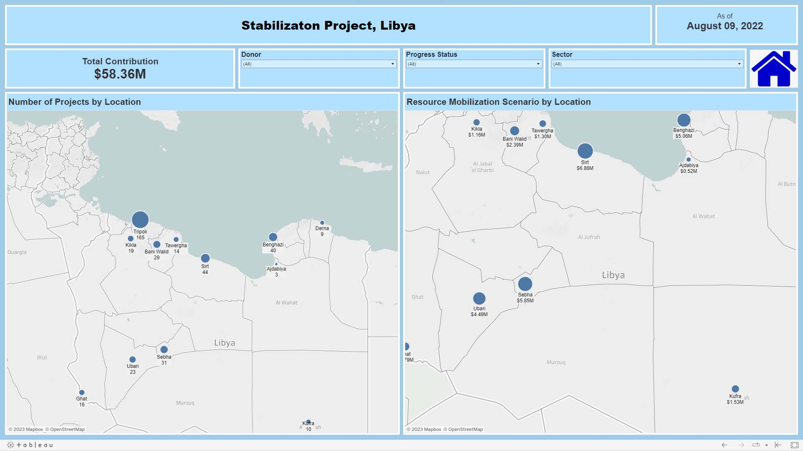
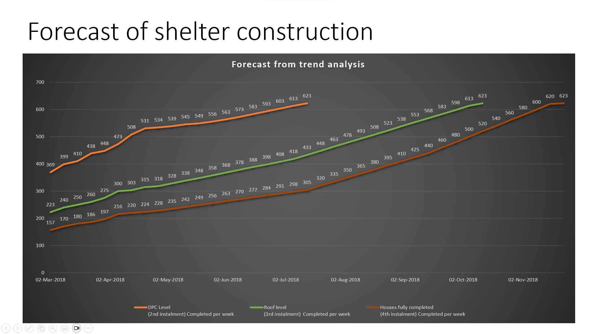
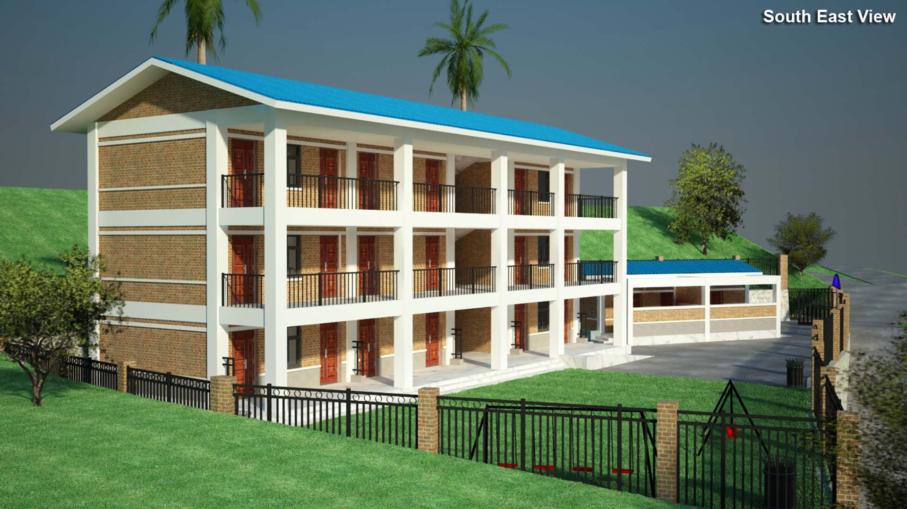
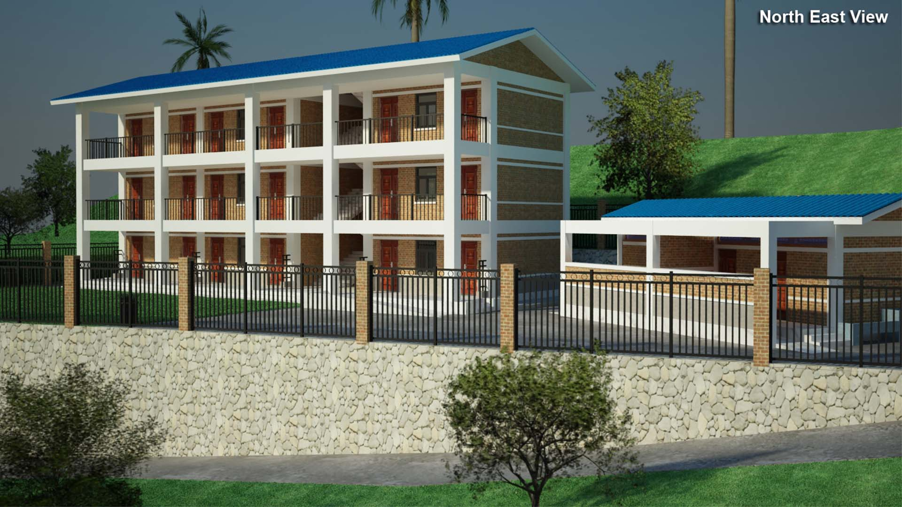
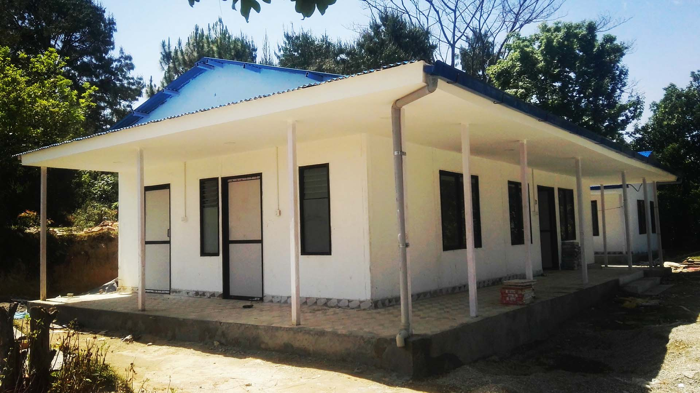

Tableau visualization of Stabilization Libya Project implementation mapping.

Power BI visualization of sample water harvesting project.

Shelter implementation forecast using excel. (EQ Recovery Program, Nepal)

Developed 3d Views of School Reconstruction. (EQ Recovery Program, Nepal)

Developed 3d Views of School Reconstruction. (EQ Recovery Program, Nepal)

Near-Complete Prefabricated Health Post in Nepal. (EQ Recovery Program, Nepal)